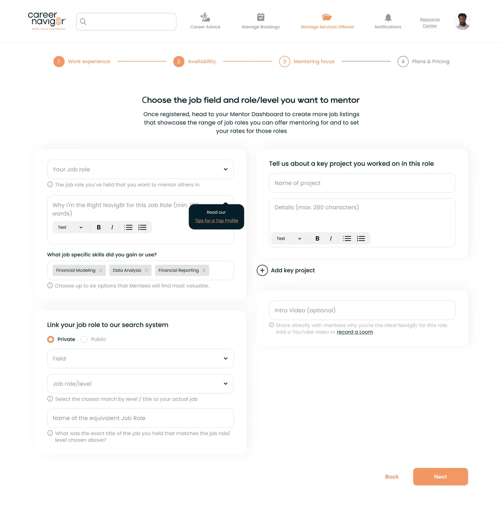
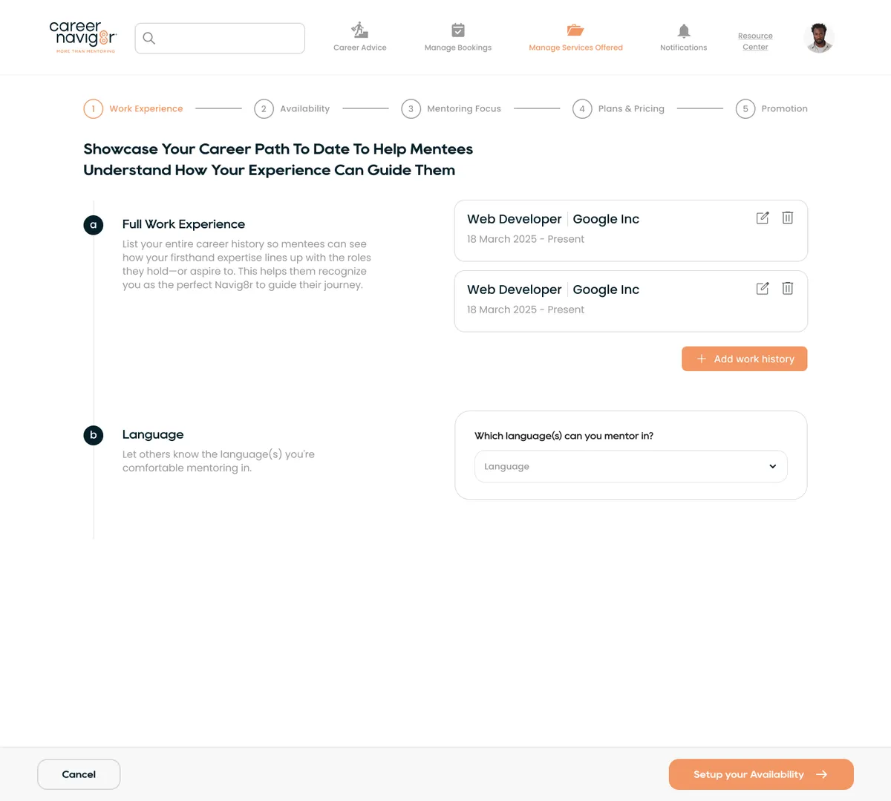
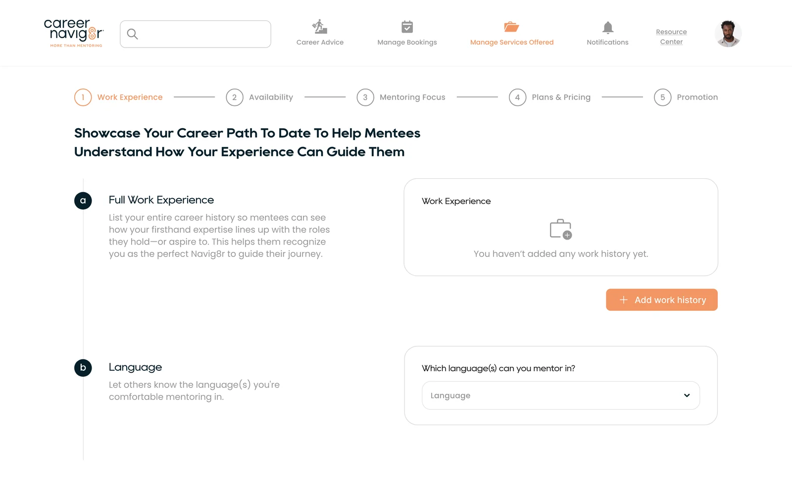
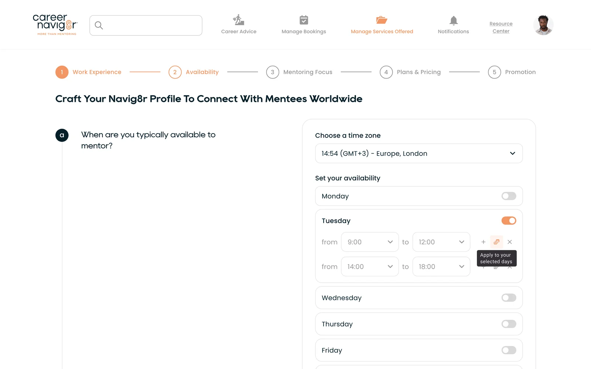
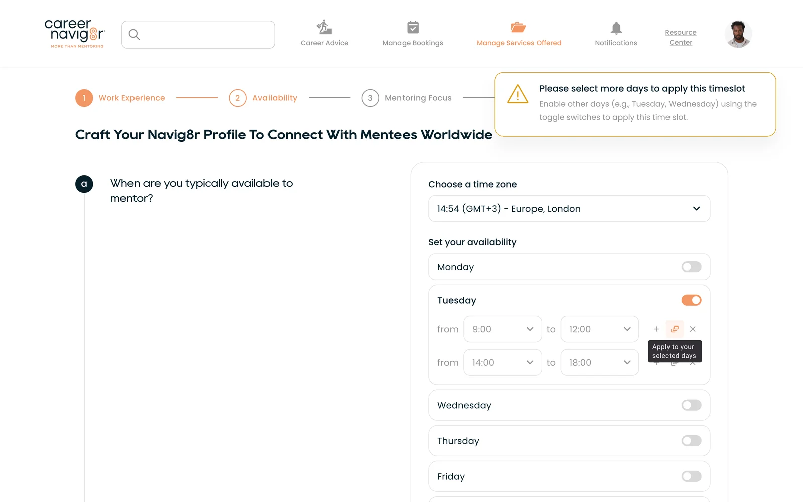
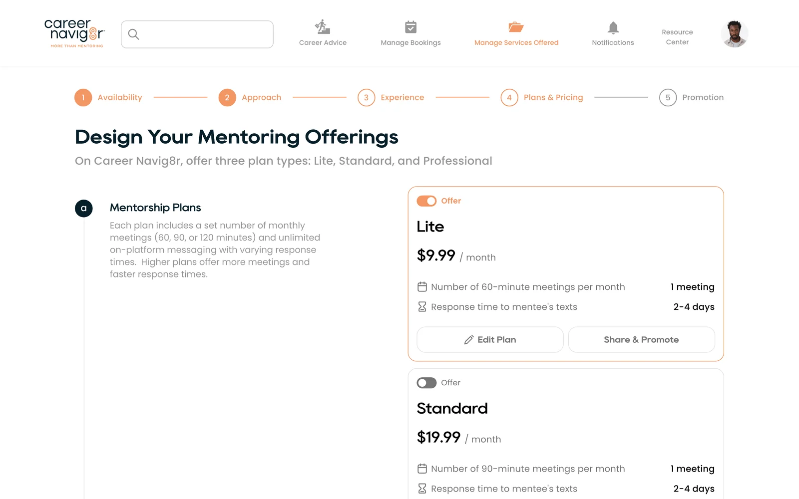
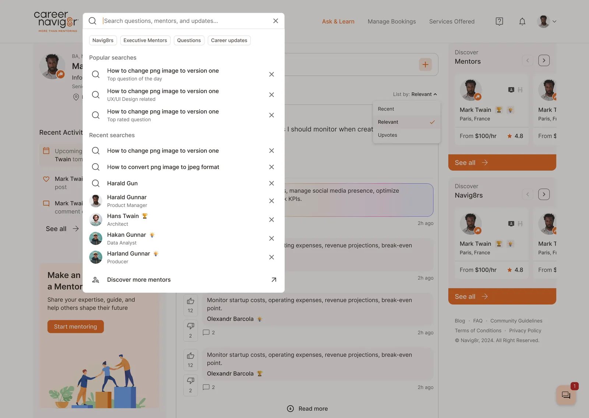

The problem
30controls on one setup page
No mentors, no bookings. But becoming a mentor was the hardest flow in the product: 4 crowded steps, a 100-word essay, and one page asking for availability, languages and links all at once.


Mapped before it was drawn
Before any screen, I mapped who signs up, what each kind of mentor has to give us, and in which order, so every step had one job.

One topic per step
Setup became 5 steps: Work Experience, Availability, Mentoring Focus, Plans and Pricing, and Promotion. Each step asks one question, and the left column says why it matters to mentees.
Start empty, end with a clear record. Saved jobs collapse into small cards, so the page stays short as mentors add more.


The rest follows the same pattern. One question on the left, the answer on the right.


Show only what's needed
The old page showed every control for every day. Now time pickers appear only for days that are switched on, and one slot can be applied to all selected days.
Try it. Switch days on and off, and watch how little is on screen.
Time zone Europe, London
- from09:00to17:00
- from09:00to17:00
- from09:00to17:00
- from09:00to17:00
- from09:00to17:00
- from09:00to17:00
- from09:00to17:00
0 controls on screen. The old page showed about 30 at once.


A separate path for executive mentors
Senior, certified mentors needed more than the basic setup: proof of certification, specialisms and their own plans. I gave them their own application and setup instead of piling more fields onto everyone else's.



Beyond setup
I also designed the home feed, posting, comments, search with filters and mentor cards, testing several card layouts to see how much a card can hold before it gets hard to scan.


Outcome
13 → 6minutes to finish setup
In team walkthroughs, the new flow took about half the time of the old one, with 5 focused steps and at most 8 controls on a screen. This is an estimate from walkthroughs, not usage data.
What I'd do differently
Measure the drop-off before you fix it.
The time savings come from walkthroughs, not usage data. Next time I'd add step-by-step completion tracking before launch, to see where mentors really drop off.